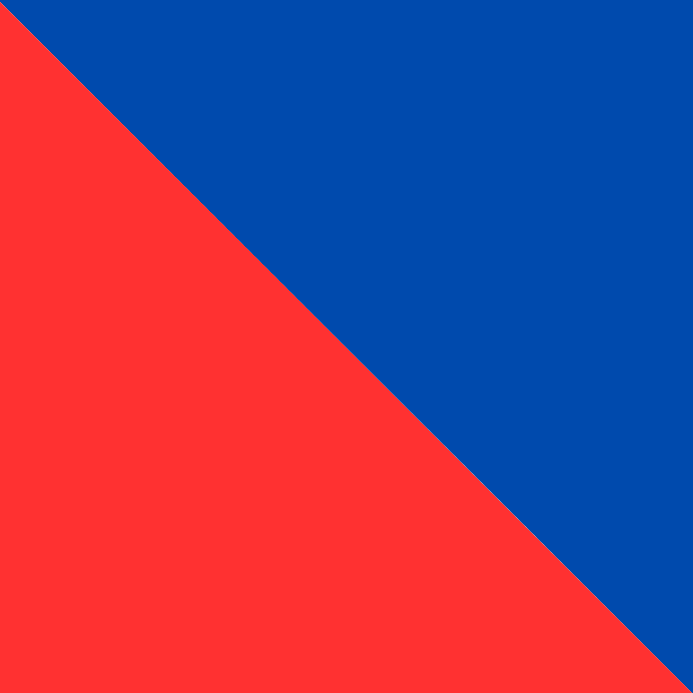
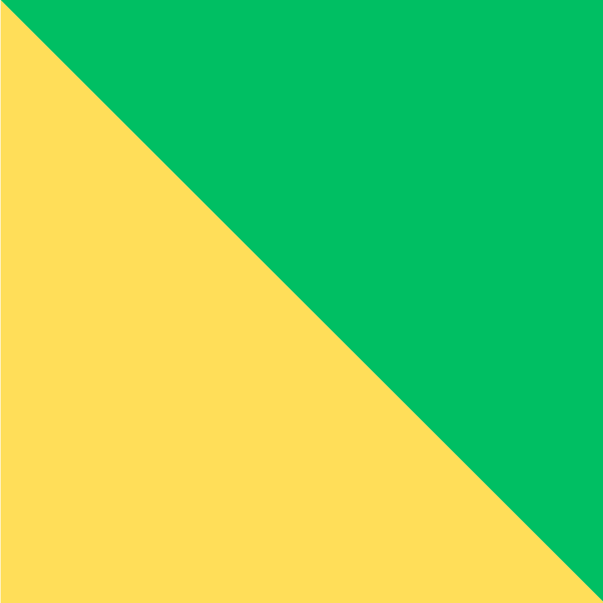
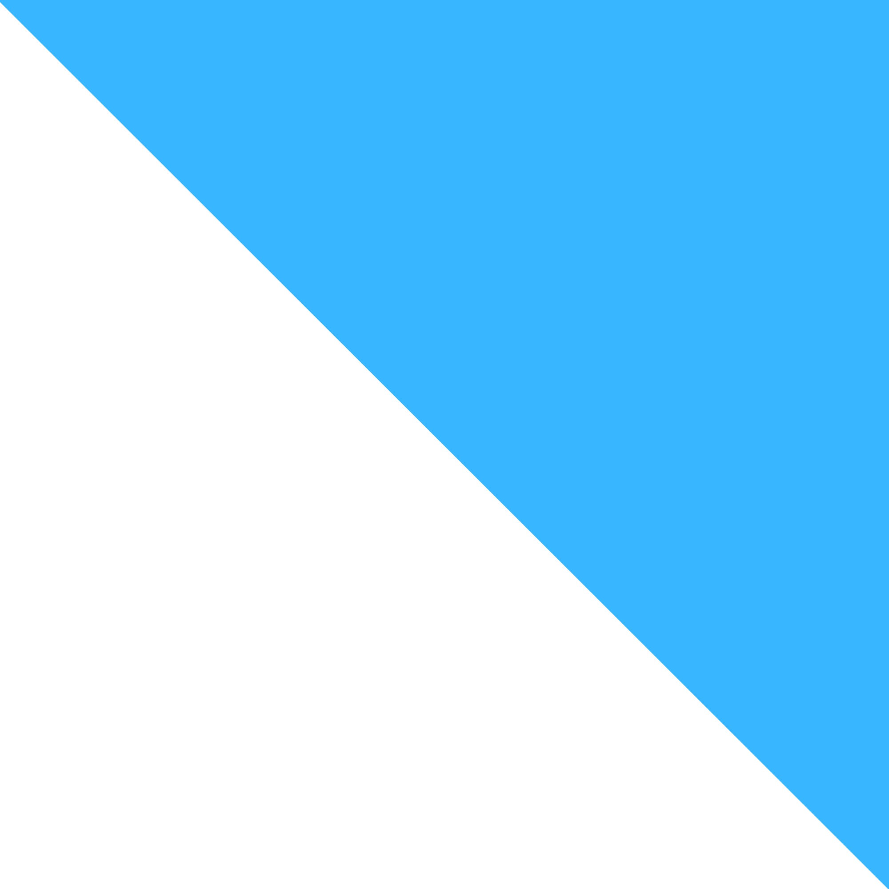
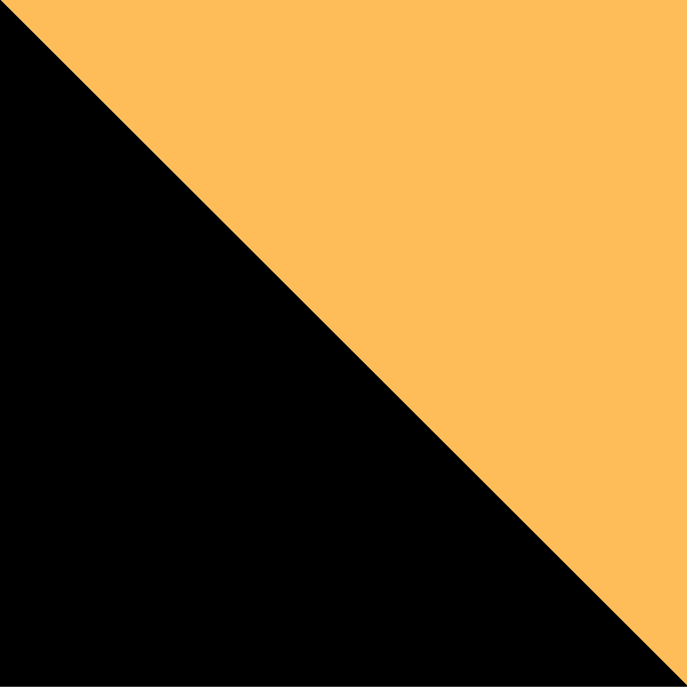

Prove atletiche medievali · Seconda settimana di agosto
Il Palio di Oria rievoca il bando emanato da Federico II di Svevia nel 1225, quando l'imperatore indisse un torneamento tra i quattro rioni della città in occasione delle sue nozze per procura con Isabella II di Brienne. La manifestazione moderna si articola in due giornate: il Corteo Storico e il Torneo dei Rioni, entrambi nella seconda settimana di agosto.

CastelloSorge sul colle più alto della città, ai piedi del Castello Svevo. Lo stemma raffigura una torre rossa sormontata da corona su campo azzurro.
Colori · Rosso e Azzurro
LamaPrende il nome dalla pianura nella quale confluivano le acque dal colle del castello. Lo stemma richiama il passaggio di San Francesco d'Assisi sul territorio.
Colori · Verde e Giallo-Oro
JudeaIl nome ricorda la vigorosa comunità ebraica medievale di Oria. Lo stemma raffigura il candelabro ebraico a sette bracci su bande bianche e celesti.
Colori · Bianco e Celeste
San BasilioDeve il nome al Colle San Basilio, dove il santo fondò un cenobio che divenne centro della chiesa oritana di rito greco. Lo stemma è una croce greca con stelle su campo nero.
Colori · Giallo-Oro e NeroDue atleti per ogni rione imbracciano un ariete che pesa 85 chilogrammi e lo trasportano di corsa per 65 metri fino a sfondare un portone. La forza e il coordinamento sono determinanti.
Un atleta per ogni rione percorre un tracciato di circa 200 metri superando una serie di ostacoli medievali senza incertezze, fino a raggiungere una scala dove colloca la bandiera del proprio rione.
I cavalieri in arme dei quattro rioni si sfidano in singolar tenzone con picca, spada, scudo e mazza ferrata. Spettacoli di bandiere, danza e fuoco intrattengono il pubblico sugli spalti.
Intero € 20,00
Ridotto (3–10 anni) € 15,00
Bambini 0–3 anni gratuito (senza posto)
Intero € 15,00
Ridotto (3–10 anni) € 10,00
Bambini 0–3 anni gratuito (senza posto)
Il Palio di Oria si svolge ogni anno nella seconda settimana di agosto a Oria (BR), in Puglia. Il Corteo Storico è gratuito e aperto a tutti lungo le vie del centro storico. Per il Torneo dei Rioni sono disponibili tribune a pagamento.
Oria si raggiunge in auto dall'A14 (uscita Taranto o Brindisi) oppure in treno fino a Francavilla Fontana, con navette durante i giorni della manifestazione.
Sito ufficiale Palio di Oria →